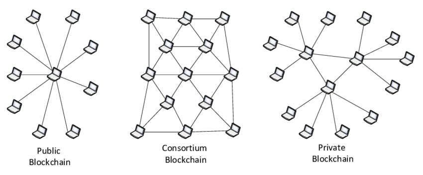
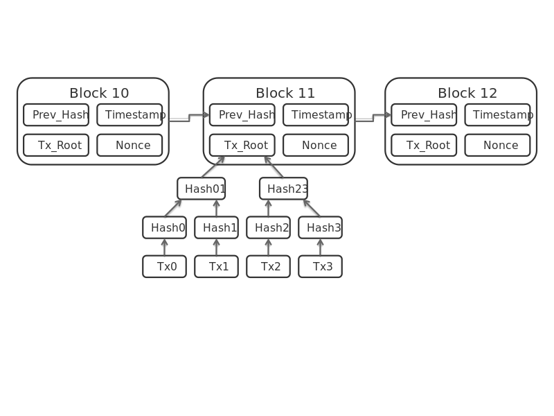

From the Tech Factory
The very beginning
This article starts with an basic consortium based blockchain architecture.
What is Blockchian? You can find the resources here But is it suitable for all kinds of businesses who have nothing to do with cryptocurrency.
Most of blockchains that are famous are Public Blockchain and can be used and viewed by anyone on earth, with an access to the Internet.
So what if you need a blockchain tech to implement which should not be public? There are solutions for private and consortium blockchains also which are controlled by a group of indiviuals or organizations respectively.
Concept
The idea revolves around Consortium Blockchains, and though there are a lot of them out there in the market, they require a lot of man days to bring up the blockchain and provide an tidy generic interface to the blockchain. Spider Chain should not be viewed as an replacement for them, but if you need a fast configuration less blockchain then this is what you can define it as.
First...
Each node on the Blockchain can be viewed as a each rectangular join in a Spider Web. Each of this nodes are permissioned, meaning they can be accessed, transacted or viewed by only authorized entities within the node or a set of nodes. A consortium blockchain is a blockchain where the consensus process is controlled by a pre-selected set of nodes; for example, one might imagine a consortium of 15 financial institutions, each of which operates a node and of which 10 must sign every block in order for the block to be valid. The right to read the blockchain may be public, or restricted to the participants, and there are also hybrid routes such as the root hashes of the blocks being public together with an API that allows members of the public to make a limited number of queries and get back cryptographic proofs of some parts of the blockchain state. These blockchains may be considered “partially decentralized”.


Second...
Each Node will maintain an indiviual ledger, which will be copy of the blockchain but only in a buffered manner, and not raw data.
- Every Node can communicate with each other as per for Consesnus Alogirithm.
- Each Node can have any number of child nodes who can view data, as permissioned.
- Each Node always adhers to the rules of Endorsment of a Transaction(s) to a Block.
- Data Interchange format will be strictly confined to JSON only.
- Each Node can run as a Node JS process or an Solo Docker Container, clusterd using Kubernetes or Docker Swarn.
More Information Shortly